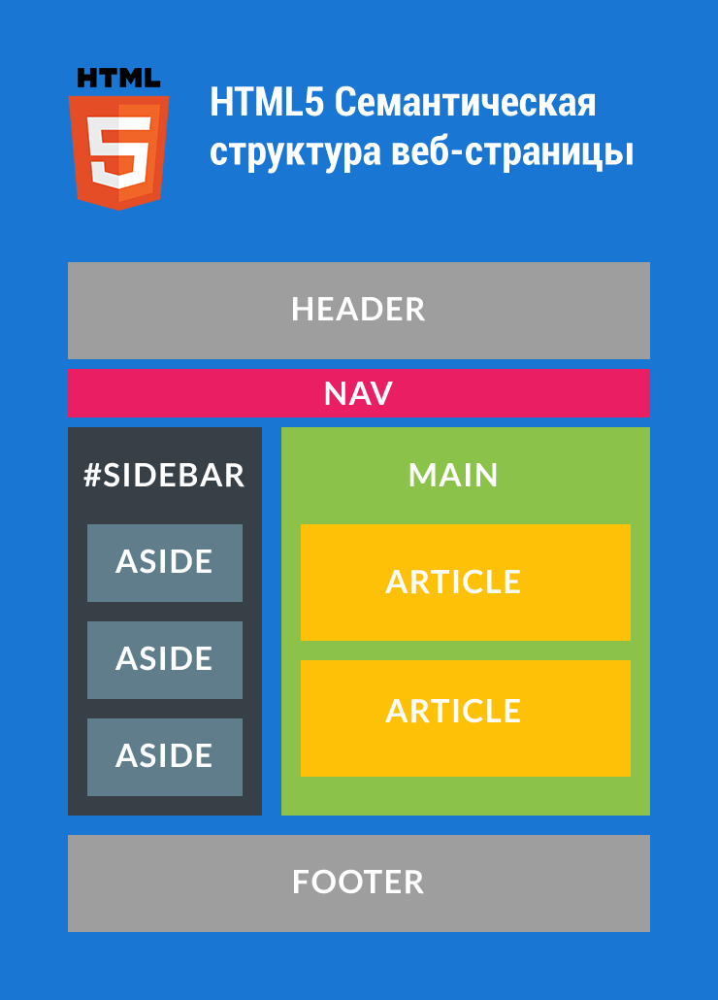

Семантические элементы HTML5
Семантические элементы HTML5 доступно описывают свой смысл или назначение как для браузеров, так и для веб-разработчиков. До появления стандарта HTML5 вся разметка страниц осуществлялась преимущественно с помощью элементов div, которым присваивали классы class или идентификаторы id для наглядности разметки. С их помощью в HTML-документе размещали верхние и нижние колонтитулы, боковые панели, навигацию и многое другое.
Стандарт HTML5 предоставил новые элементы для структурирования, группировки контента и разметки текстового содержимого. Новые семантические элементы позволили улучшить структуру веб-страницы, добавив смысловое значение заключенному в них содержимому. Для отображения внешнего вида элементов не задано никаких правил, поэтому элементы можно стилизовать по своему усмотрению.
Элемент header
Группирует вводные и навигационные элементы, не является обязательным. Может содержать заголовки, оборачивать содержание раздела страницы, форму поиска или логотип. В HTML-документе может содержаться одновременно несколько элементов header и они могут располагаться в любой части страницы. Элемент header нельзя помещать внутрь элементов footer, address или другого элемента header.
Элемент nav
Предназначен для создания блока навигации веб-страницы или всего веб-сайта, при этом не обязательно должен находиться внутри header. На странице может быть несколько элементов nav. Не заменяет теги ul или оl, он просто их обрамляет. Не все группы ссылок на странице должны быть обёрнуты nav, этот элемент предназначен в первую очередь для разделов, которые состоят из главных навигационных блоков.
Элемент article
Используется для группировки записей — публикаций, статей, записей блога, комментариев. Представляет собой независимый обособленный блок, предназначенный для многократного использования, как правило, начинается с заголовка. Может дублироваться на других страницах сайта и содержать внутри другие элементы article, которые по содержанию имеют близкое отношение к содержанию внешней статьи. Если на странице присутствует только одна статья с заголовком и текстовым содержимым, она не нуждается в обёртке элементом article. Элемент рекомендуется использовать только в том случае, если содержимое элемента будет явно указано в схеме документа.
Элемент section
Элемент представляет собой универсальный раздел документа. Группирует тематическое содержимое и обычно содержит заголовок. Не является блоком-оберткой, для этих целей уместнее использовать элемент div. В качестве содержимого может выступать оглавление, разделы научных публикаций, программа мероприятия. Домашняя страница сайта также может быть поделена на секции — блок вводной информации, новости и контакты. Элемент рекомендуется использовать только в том случае, если содержимое элемента будет явно указано в схеме документа.
Можно создавать родительские элементы section с вложенными элементами article, в которых есть один или несколько элементов article. Не все страницы должны быть устроены именно так, но это допустимый способ вложения элементов. Например, основная область контента страницы содержит два блока со статьями разной тематики. Можно сделать на этом акцент, поместив каждую статью одной тематики внутрь элемента section.
Элемент aside
Группирует содержимое, связанное с окружающим его контентом напрямую, но которое можно счесть отдельным (т.е., удаление этого блока не повлияет на понимание основного содержимого). Чаще всего элемент позиционируется как боковая колонка (как в книгах) и включает в себя группу элементов: nav, цифровые данные, цитаты, рекламные блоки, архивные записи. Не подходит для блоков, просто позиционированных в стороне.
Элемент footer
Представляет собой нижний колонтитул содержащей его секции или корневого элемента. Обычно содержит информацию об авторе статьи, данные о копирайте и т.д. Если используется как колонтитул всей страницы, содержимое дополняется сведениями об авторских правах, ссылками на условия использования, контактную информацию, ссылками на связанное содержимое и т.п.
В одном веб-документе может быть несколько элементов footer. Как каждая страница, так и каждая статья может иметь свой элемент footer, более того, footer можно поместить в элемент blockquote, чтобы указать источник цитирования.
Элемент address
Используется для определения контактной информации автора/владельца документа или статьи. Для обозначения автора документа тег размещают внутри элемента body, для отображения автора статьи — внутри тега article. В браузере обычно отображается курсивом.
Элемент main
Элемент main представляет основное содержимое документа (содержимое элемента body). Контент, находящийся внутри элемента, должен быть уникальным и не повторяться во всех документах сайта, таких как навигационные ссылки, информация о копирайте, логотипы, формы поиска (в случае, если форма поиска является основной функцией документа). Элемент main не может быть потомком таких элементов как article, aside, footer, header или nav.
Элемент figure
Элемент figure представляет автономный контент (необязательно с заголовком), являющийся самостоятельным элементом основного потока. Элемент может быть перемещен из основного содержимого документа в боковую колонку или приложение, не затрагивая поток документа. С помощью элемента figure можно добавлять краткие характеристики к иллюстрациям, фотографиям, диаграммам, фрагментам кода и т.д..
Кроме выше описанных элементов существуют также:
- figcaption
- mark
- bdi
- wbr
- и элементы для описания Восточно-Азиатских символов:
- ruby
- rb
- rt
- rtc
- rp